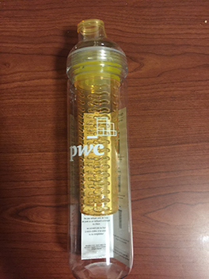
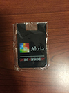
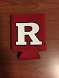
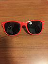
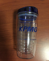
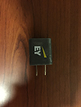
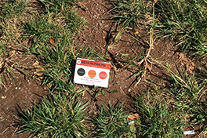

This week's trash is especially exciting because we had several major events on campus: The Mega Career Fair, the Business Expo, and the Business School's Career Fair. As a result, I have decided to categorize my trash into three categories: Health and Wellness, Career Fair Promotional Items, and Student Life.
At Rutgers New Brunswick, we have two large Career Fairs: one in the Fall and one in the Spring. The Rutgers Business School has two large career fairs that usually falls on the same week as the University wide Career Fair. It's where we get a lot of junk and promotional items from recruiters. At these events, we meet with recruiters, shake their hands, and pass out resumes. All with the hope that they will offer us a position in their company or at least a chance to interview with them.
At Rutgers New Brunswick, student organizations post a lot of fliers to promote their events. Each year we have two involvement fairs. One is in the Fall and the other is in the Spring. During these involvement fairs, student organizations and groups give out promtoional items to promote their organizations. After the events are done, some of the fliers are thrown on the ground. At the Career Fair, we get a lot of free stuff that we do not need, so we end up donating most of them. Trash of the Week shows what kind of student organizations that I am part of and my personal interests and hobbies.
The last category is health and wellness. This is a broad category that consists of food, drinks, and stationary. I throw out the most water bottles, containers, cardboard, fliers, and pencils. As college students, we like to eat out; especially, when a new restaurant opens. Our food containers include the containers that we get from eating Dining Hall take out.
The Purpose
The purpose of this project is to showcase a college student's lifestyle. My Trash of the Week showcases what kind of companies that I look for at the career fair, what brand of clothing that I like to wear, and the kinds of food that I eat everyday. It also keeps track of where I go everyday. It goes through schedule and you get to live a day in my shoes. Whether it is trying out the new places to eat on college ave like Honey Grow, Surf Tacos, RU Hungry, or Jersey Subs or the dining hall, you get to look at my eating habits. On the College Avenue Campus and the surrounding New Brunswick area, there are plenty of places to eat. As I build upon this website, you will find a new restaurant with affordable prices to try. One of my favorite places is Chipotle, Old Man Rafferty's, and Stuff Yer Face. They are scattered across New Brunswick, but the walk from one end to the other end is not so bad.
This Week in Detail
Why am I doing this?
I am sharing my trash to build a storefront of items that others might value. I am a firm believer in luck and I have found that I have more luck when I work harder. Hopefully, my trash also conveys my philosophy in life.
Groups of the Week
September is the first month of the new school year and a lot has happened since I last stepped onto campus. Recently, Rutgers opened the Yard, the College Avenue Apartments, and the new Rutgers Academic Building. With the opening of the Yard comes new places to eat, such as HoneyGrow, Surf Tacos, and Jersey Subs. Starbucks is opening soon, along with a new pizza parlor. When new places to eat open, I have to try it and hopefully my trash reflects my tendendency to try new things with an open mindThis week's trash falls into three groups
Fliers: At Rutgers we get a lot of fliers and see a lot of fliers from student organizations and other on-campus events. Some the events on campus that interests me at the moment are the different informational sessions that employers hold in the student centers, general career fairs, and career exposition fairs. I am also involved in three organizatons on campus, so I enjoy cultural, lesiure, and social activities.
Health and Wellness: Health and Wellness refers to food and beverage containers. It's shows what I eat everyday to stay alive. In college it is difficult to stay healthy because there is a culture where students like to pull all nighters and eat greasy junk food. Whether it is french fries in the dining halls or fat sandwiches and coffee, I consume food that has high sugar or salt contents. It takes tremendous discipline to eat healthy and stay active. With all the things that go on campus, it is difficult to find time to go to the gym and workout. Starting this semester, Rutgers Recreation is offering FlexPlass Classes to students for free.
Career Fair Promotional Items: Career Fair borchures and fliers show my audience what types of company that I am interested applying to. As a senior, I have been applying to as many companies as I could find from Johnson & Johnson to Deloitte and Touche/KPMG/PWC/Ernst & Young. I prefer to work in a large company with a lot of people and great benefits, but I also want to work at a company with a community of young people, who are fresh out of college. It easier to talk to people from the same generation and similar backgrounds.
Trash Gallery

PWC Water Bottle
Altria Card HolderRutgers Internal Auditing Ball
Rutgers Beer Holder
Altria SunglassesEY USBDeloitte USB PortsA broken pencil.

KPMG Bottle

Charger head

Beta Alpha PsiHoneyGrow
Jersey MikesBack to the Top
EY USB is hands down the item of the week. Before the career fair, I relied on the charging stations in the student centers to charge my phone because I forgot my charger at home. This USB cable definitely helped me get through the week.
Sorting Game
Landfill
Recycling
This Week's Hoard...
German BookTrain TimetableComic BookNapkinGreen SunglassesBicycle LightTwo PegsRight HandWrist Warmer